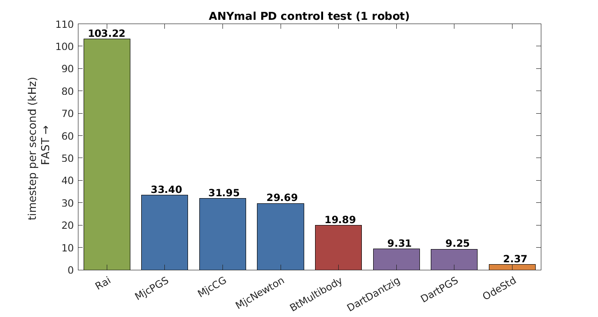
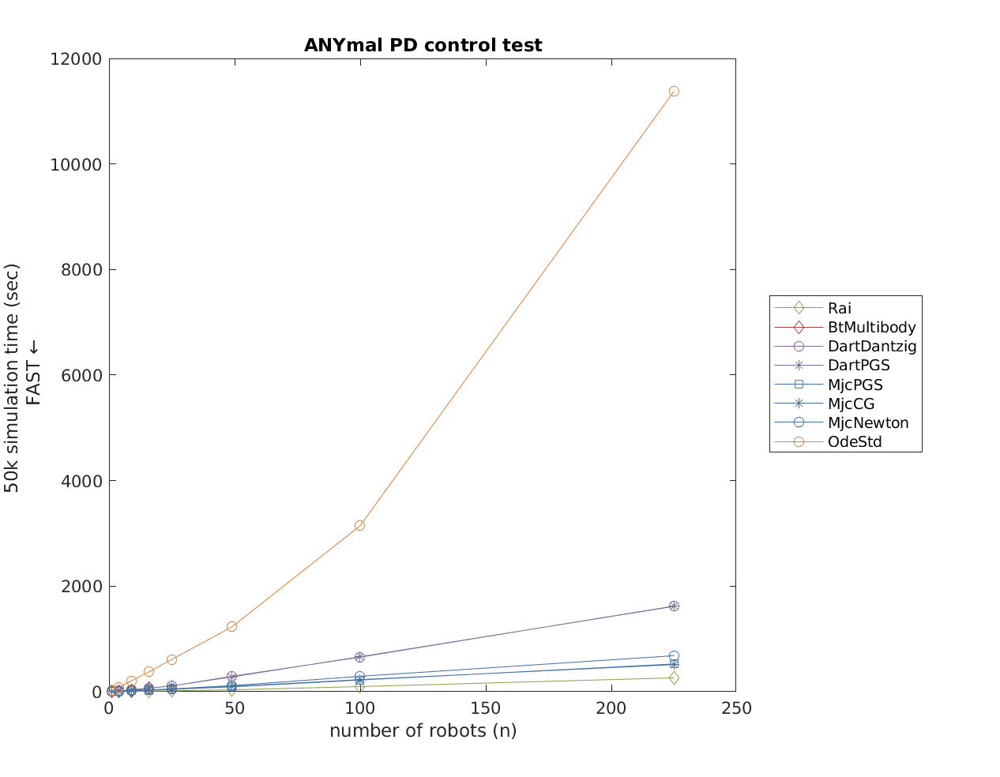
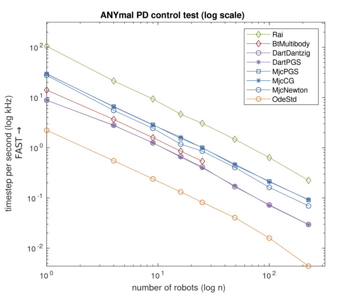

ANYmal test is for testing articulated robot system. In this test, the 18 DOF quadruped robot [ANYmal](http://www.rsl.ethz.ch/) is feedback-controlled to stand on the flat ground.
The test focuses on: 1. Speed of the articulated system (multibody system with revolute joints) simulation 2. Scalability of the simulatorsNote that ODE quick solver easily fails for articulated system simulation as the following video, thus was exempted.

According to the manual this is due to the solver's property:
QuickStep is great for stacks of objects especially when the auto-disable feature is used as well. However, it has poor accuracy for near-singular systems. Near-singular systems can occur when using high-friction contacts, motors, or certain articulated structures. For example, a robot with multiple legs sitting on the ground may be near-singular.
from ODE wiki
The results of the test are as following figures.
  